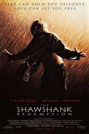
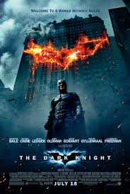
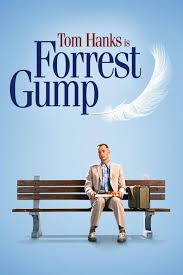
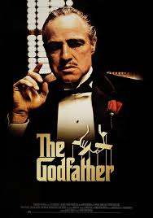
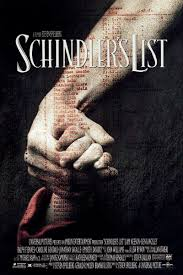
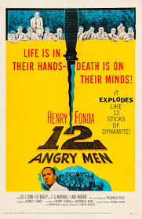

The Shawshank Redemption (1994) — Janr: Dram
The Dark Knight (2008) — Janr: Dram, Kriminal, Aksiyon
Forrest Gump (1994) — Janr: Dram, Romantika
The Godfather (1972) — Janr: Dram, Kriminal
Inception (2010) — Janr: Elmi-Fantastika, Ekşn, Macəra
Schindler's List (1993) — Janr: Bioqrafiya, Dram, Tarixi
The Matrix (1999) — Janr: Aksiyon, Elmi-fantastika
12 Angry Men (1957) — Janr: Dram, Detektiv